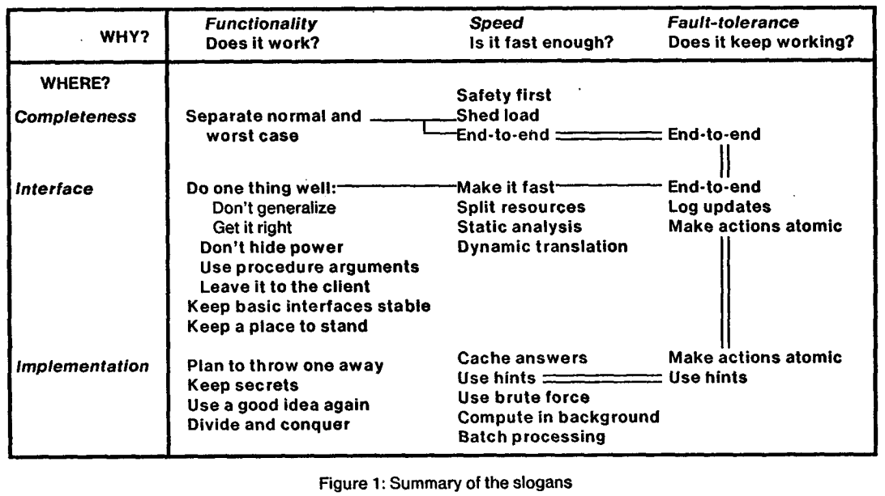

본 글은 ACM SIGOPS 에 게재된 논문 " Hints for Computer System Design" 를 읽고 정리한 내용입니다. (한국어 번역본)
본 문서는 아직 #draft 상태입니다. 읽을 때 주의해 주세요.
Abstract
- 본 논문에는 저자(Butler W. Lampson) 가 여러 OS 들을 설계하고 구현하는 과정에서 얻은 노하우들을 정리해 놓았다고 한다.
1. Introduction
OS 설계상의 어려움..
- OS 를 설계하는 데에는 이런 어려움이 있다
- 외부 인터페이스 (External interface, 요구사항 정도로 생각하고 넘어가도 될 것 같다) 가 복잡하고 명확하지도 않고 자주 바뀔 여지가 있다
- 내부 인터페이스 (Internal interface, 시스템 내부의 여러 컴포넌트들이 상호작용하기 위한 인터페이스) 가 아주 많다
- 평가의 척도도 명확하지 않다
- 굉장히 많은 파라미터가 있으며 어떤 선택이 어떤 영향을 미칠지 알 수가 없다
- 그래서 최선의 방법은 없고 최악만 피하는 방법으로 가야 한다고 하네
슬로건
- 저자는 제시한 OS 설계의 모든 힌트들을 “슬로건” 의 형태로 요약했다고 한다.
- 그리고 각 슬로건들을 도표 형태로 정리하면 다음과 같다

- 가로축은 (해당 슬로건이) 시스템의 어떤 것을 좋게 하는지
- 세로축은 시스템 디자인의 어느 부분에 도움이 되는지
- 두 줄로 연결되어 있는 건 같은 슬로건
- 한줄은 두 슬로건이 연관이 있음
Slogan quick view
- Functionality
- Separate normal and worst case: 정상 상황과 비정상 상황을 하나의 mechanism 으로 해결하려 하지 말고 분리해서 mechanism 과 policy 를 수립해라
- Do one thing well: 인터페이스는 하나의 기능만 정확하게 작동하도록 설계하고 구현해라
- Don’t generalize: 모든 기능이 담긴 일반화를 하지 말아라
- Get it right: 정확하게 작동하게 해라
- Don’t hide power: HW 적으로 더 강력한 기능을 제공해주는데도 불구하고 느리고 일반적인 interface 만 제공해서 사용자가 이러한 기능을 사용하지 못하게 하는 것을 지양해라
- Use procedure arguements: 오름차순정렬, 내림차순정렬 두 기능이 아닌 정렬 기능 하나에 argument 로 오름차순, 내림차순을 정도록 interface 를 설계해라
- Leave it to the client: data 를 fetch 하는 함수에 해당 데이터를 어떻게 처리할지에 대한 callback 함수를 인자로 받는 것처럼 하나의 함수에서 너무 많은 기능을 제공해 주기 보다는 일부 기능은 programmable 하게 하여 사용자가 직접 하도록 위임하는 것
- Keep basic interfaces stable: 인터페이스를 되도록이면 바꾸지 말라
- Keep a place to stand: compatibility 를 고려해라
- Plan to throw one away: Revertability (개발의 시작단계에서, 현재 버전은 완전히 폐기될 수도 있다는 것을 감안해라 - 즉, 약간 어차피 폐기될텐데 의 마음가짐으로 좀 더 실험적이고 도전적으로 접근해라는 의미)
- Keep secrets: Abstraction (노출될 필요가 없는 내부 구현과 같은 것들은 숨겨라)
- Use a good idea again: Reusability (좋은 algorithm 을 이미 구현해 놓았으면 그것을 유사한 상황에서도 재사용해라)
- Divide and conquer: 하나의 문제를 해결하기 쉬운 작은 문제들로 쪼개서 합치는 식으로 해결하는 것
- Speed
- Safety first: 아무리 빠르다 하더라도, 그것이 안전하지 않다면 (뭐 error handling 이 안되어있다던지) 제공해서는 안된다.
- Shed load: load balancing
- End-to-end: 네트워크에서 L2 와 L4 를 생각하면 된다: eth 에서 hop-to-hop error checking 을 하긴 하지만, UDP 와 같이 e2e error checking 을 하지 않으면 문제가 생길 수 있다.
- Make it fast: 빠르게 작동하도록 구현할 수 있다면 최대한 빠르게 해라
- Split resources: storage network 를 별도로 분리하는 것과 같은 원리다 = 자원을 분리해서 서로간의 영향을 줄여라
- Static analysis: 코드 정적 분석을 해서 발생 가능한 에러를 미리 처리해라
- Dynamic translation: higher level language 를 runtime 에 low level language 로 번역해서 실 사용환경에 따라 다르게 최적화될 수 있게 해라
- Cache answers: 복잡한 계산을 요하는 값이 여러번 사용된다면, 매번 계산하지 말고 캐싱해놔라
- Use hints: 이건 multi-stream SSD 나 FDP 같은거 생각하면 된다. SSD 에게 추가적인 정보 (hint) 를 제공해 줘서 SSD 가 이것을 이용해 성능을 향상시킬 수 있게 하는 것.
- Use brute force: 빠르지만 엄청 복잡한 알고리즘보다 brute force 를 돌려 다소 느리지만 이해하기 쉽고 구현이 간단한 것을 쓰는 것이 더 좋을 때도 있다.
- Compute in background: 말그대로 - 급하지 않고 시간 소모가 많은 일은 background 로 돌려 급한 일이 요청되었을 때 그제서야 이것을 처리하느라 지연되지 않게 해라
- Batch processing: 독립적인 작은 작업들을 하나하나 처리하지 말고 모아놓았다가 한번에 처리해라
- Fault-tolerance
- Log updates: journaling 이다 - 로깅해놓았다가 crash 때 이것으로 복구해라
- Make actions atomic: 어떤 작업이 atomic 하지 않으면 중간에 crash 날 경우 작업의 중간단계 상태로 계속 머물러 있게 되고, 이것은 시스템의 일관성을 해친다.
2. Functionality
- 당연하게도 시스템은 올바른 기능을 제공해야 하는데
- 이것을 제공하는 힌트들을 상당 부분 interface 와 연관되어 있다
- 당신이 아는 그 interface 맞다
- 실제 implementation 과 구분돼서 두 프로그램이 상호작용하기 위한 창
- Interface 들은 assumption 1 들로 구성된다
- 이들은 프로그램이 의도한대로 작동하는 것을 확인하기 위해 필요한 것? 뭐라노
- 그리고 이 interface 들은 아래의 세 상충하는 요구사항을 만족시켜야 하기 때문에 설계하기 까다롭다
- simple: interface 는 간단해야 한다
- complete: interface 는 구현된 모든 것을 제공해야 한다?
- small and fast implementation: 작게 구현되어야 한다 (약간 컴포넌트를 작게 나눠서 모듈화하는 것과 비슷한 맥락인듯)
- Interface 는 그 자체로 프로그래밍 언어와 유사한 면이 있다
- 일련의 오브젝트들과 그들을 조작하는 작동들을 포함하기 때문
- 이러한 면에서 Hoare 의 프로그래밍 언어 디자인 가이드 는 interface 디자인에 도움이 될거라고 하네
- 이 섹션은 대략 아래와 같이 구성되어 있다
2.1. Keep it simple
Do one thing well, Don’t generalize
- 일단 나열부터 해보자고
- Interface 는 추상화의 최소한만 담아야 한다
- 인터페이스에 너무나 많은 것이 담기면, 구현은 당연히 크고 복잡해진다
- 인터페이스는 특정 양의 서비스만 제공하는 계약과 같다?
- 인터페이스의 사용자는 해당 인터페이스가 제공하는 기능과 그 기능을 제공하는데 소요되는 자원에 의존하게 된다
- 기능은 보통 문서화되지만
- 자원은 보통 문서화되지 않는다
- 인터페이스는 어떻게 구현할 지 확실하게 알지 못하는 것을 제공해서는 안되고
- 혹은 소수의 사용자만이 사용하는 것을 제공하면 안된다
- 다른 컴포넌트에 영향을 주지 않고도 구현할 수 있는 방법을 알고 있을지라도 나중에 해당 문제가 명확해질 때 (많은 사람들이 사용하게 될 때) 까지 미루는 것이 낫다고 한다.
For example, PL/1 got into serious trouble by attempting to provide consistent meanings for a large number of generic operations across a wide variety of data types. Early implementations tended to handle all the cases inefficiently, but even with the optimizing compilers of 15 years later, it is hard for the programmer to tell what will be fast and what will be slow (31). A language like Pascal or C is much easier to use, because every construct has a roughly constant cost that is independent of context or arguments, and in fact most constructs have about the same cost.
- 이러한 관점(?) 은 자주 사용되는 기능들에 적용될 수 있고, 잘 사용되지 않는 기능은 기능을 위해서 성능을 어느정도 희생할 수 있다
- 더 나은 구현을 위한 연구에는 이런 것들 (?) 이 적용되지 않을 수 있지만, 이 연구는 실패할 수도 있기에 여기에 의존하면 안된다
The Alto operating system (29) has an ordinary read/write-n-bytes interface to files, and was extended for Interlisp-D (7) with an ordinary paging system that stores each virtual page on a dedicated disk page. Both have small implementations (about 900 lines of code for files, 500 for paging) and are fast (a page fault takes one disk access and has a constant computing cost that is a small fraction of the disk access time, and the client Hints for Computer System Design July 1983 5 can fairly easily run the disk at full speed). The Pilot system (42) which succeeded the Alto OS follows Multics and several other systems in allowing virtual pages to be mapped to file pages, thus subsuming file input/output within the virtual memory system. The implementation is much larger (about 11,000 lines of code) and slower (it often incurs two disk accesses to handle a page fault and cannot run the disk at full speed).
- 이러한 인터페이스를 구현하는 것이 불가능한 것은 아니지만, 일반적으로 아주 힘들다.
- 위에서 제시된 예시 또한 아주 특출난 사람들이 구현했지만 실패했고, 이것을 해결하는 여러 방법이 알려져 있지만 보통 많은 자원을 필요로 하고 복잡하다고 한다…
- Tenex system 예시 - unassigned page reference 를 주는 syscall 이 있는데, 이를 이용해서 디렉토리의 비밀번호를 적은 시도횟수로 알아낼 수 있고, interface 가 복잡해서 이런 버그가 있는지 오랜 기간 동안 사람들이 몰랐다고 한다
- 간결하고 강력한 인터페이스와 이것에 대한 빠른 성능을 제공하는 구현을 하기 위해 엄청난 양의 노력을 투입하는 것은 가치가 있다라고 생각하던 때가 있었으나, 이것은 해당 인터페이스가 중요하다는 것이 경험적으로 보장되고 빠른 성능을 제공하는 구현 방법을 이미 알 때에나 시도하는 것이 좋다라고 한다
- BitBit, RasterOP 예시 - 오랜 기간 동안 공들여서 구현했으나 이전에 구현된 것과 큰 성능차이가 없을 뿐 아니라 interface 의 generality 때문에 display application 의 개발에도 큰 (그리고 아마 그닥 좋지 않은) 변화를 만들어 냈다고 한다
- Dorado memory system 예시 - 디자인에 아주 오랜 기간이 걸려서 빠른 IO 를 위한 캐시와 고대역폭의 버스를 제공하는 인터페이스를 고안, 구현했으나 (아마 캐시가 아닌) 메모리 접근이 주된 성능 저하였다는 것, 그리고 고대역폭의 IO 가 생각보다 소모하는 자원에 비해 비효율적이라는 지식만을 남겼다
Get it right
- Abstraction 이나 Simplicity 가 “정상적으로 작동함” 을 보장하지는 않는다 - 오히러 이들이 심각한 문제를 초래할 수 있다
- Word processing 예시…
2.2. Corollaries
Make it fast
- 모든 기능을 제공하는 느리지만 강력한 한가지보다는 하나의 기능만 제공하는 빠른 한가지가 훨씬 낫다
- 하나만 하는 빠른 것을 만들어 놓으면 client 들이 이것을 사용하며 다양한 기능들을 구현할 수 있다
- 이런 식으로 모든 기능을 커버칠 수 있는 것
- 또한 모든 기능을 제공하는 놈을 만들어 놓게 되면 한가지 기능만을 원하는 client 가 그것을 느리게 사용할 수 밖에 없다
- 가령, 느리지만 강력한 instruction set 을 제공하는 VAX 같은 머신보다 단순한 작업을 빠르게 해내는 instruction set 을 제공하는 801 이나 RISC 가 실제로도 더 빠르게 작동한다고 한다
- 코드 실행 중 어느 부분에서 느리게 작동하는지 분석하는 툴이 있으면 좋다고 한다..
To find the places where time is being spent in a large system, it is necessary to have measurement tools that will pinpoint the time-consuming code. Few systems are well enough understood to be properly tuned without such tools; it is normal for 80% of the time to be spent in 20% of the code, but a priori analysis or intuition usually can’t find the 20% with any certainty. The performance tuning of Interlisp-D sped it up by a factor of 10 using one set of effective tools (7).
Don’t hide power
- 적게 추상화를 해서 빠르게 작동할 수 있는 무언가를 만들었다면, 그것을 많이 추상화하고자 할 때에는 숨겨놓지 마라
- 추상화는 공개하기에 바람직하지 못한 것을 숨기기 위한 것이지 공개해야 마땅한 것을 숨기기 위한 것이 아니다
- 다만 추상화라는 것은 “통합” 의 개념이 있기 때문에 어느정도의 성능 감소가 있을 수는 있지만 성능 감소를 최소화 하면서 단일의 client 에게 제공하는 것은 거의 대부분 가능하다
- Alto disk hardware 예시 - 강력한 기능에 대한 높은 추상화를 적은 손실만을 보며 제공한 사례
- 대충 적은 추상화가 제공하는 강력한 기능을 높은 추상화에서도 충분히 사용할 수 있도록 인터페이스를 짜라… 라는 의미인 것 같은데
Use procedure arguments
- 약간 함수형 프로그래밍의 느낌 생각하면 된다
- filter 함수에 인자로 함수를 전달해서 인자 함수의 결과값에 따라 배열 원소를 필터링 하는 것 처럼
- Interface 가 Procedure 를 인자로 받도록 하면 인터페이스를 유연하게 설계할 수 있다
- Berkeley spy system monitoring 예시 - 몰?루
- FRETURN 예시 - 일반적인 경우에는 C 로 작동하다가 문제가 생겼을 경우 failure handler 로 넘기는 CF operation 을 사용해 C 의 빠른 성능과 Failure handler 의 유연성을 모두 챙긴.. 뭐라노
Leave it to the client
- 한가지 작업만 하고 나머지는 client 에 맡기는 것이 simplicity, flexibility, high-performance 모두를 챙길 수 있다고 한다
- 가령 많은 (프로그래밍 언어에서의) 파서의 경우 문맥에 구애받지 않는 파싱을 제공해주고 client 쪽에서 파싱의 결과를 저장도록 해서 client 가 생성된 파스 트리를 확인할 수 있도록 한다고 한다더라
- 동시성을 위한 Monitor 기능 또한 이러한 방법으로 구현되어 있다 - Lock 을 걸고 Signal 을 보내 푸는 단순한 작동만을 제공해주고 나머지는 Client program 에서 처리하도록 하여 간편하고 빠른 구현체를 제공할 수 있게 한다
- UNIX 에서도 한개 이상의 문자열을 받아 한개 이상의 문자열을 반환하는 단 한가지의 일을 하는 작은 프로그램을 짜도록 권고한다. 결국에는 client 가 이들을 모아 원하는 방식대로 빠르게 작동하는 구현체를 만들게 될 것이다
2.3. Continuity
- 디자인을 개선하는 것과 안정성있게 작동하는 것 사이에는 trade-off 가 있다:
- 디자인을 개선하는 것은 안정적으로 작동하는 기능의 안정성을 깰 가능성이 충분히 있기 때문
Keep basic interfaces stable
- 인터페이스라는 것은 많은 외부 컴포넌트들과 연관되어 있기 때문에 인터페이스를 바꾸는 것은 정말 큰 문제를 초래할 수 있다
- 더군다나 타입체크가 없는 프로그래밍 언어를 사용할 때에는 client 입장에서 인터페이스가 변경되었다는 것을 알기 정말 어렵기 때문에 권고되지 않는다
- Mesa 같은 빡센 타입체킹이 들어가 있는 프로그래밍 언어를 사용하면 인터페이스 변경을 감지하는 것이 한층 편하지만 그럼에도 불구하고 assumption 1 을 맞춰야 됨에는 변화가 없다
- 또한 25만 줄에 달하는 코드로 이루어진 시스템의 경우에는 변경에 시간이 너무 오래 걸려 바꾸지 못하기도 한다
Keep a place to stand
- 서있을 수 있는 장소를 냅둬라… 인터페이스를 변경하고자 한다면 이전 인터페이스도 기능을 하게 하라는 뜻인 것 같다
- Compatibility package - Backward compatibility 를 위해서 새 인터페이스와 기존의 인터페이스를 모두 냅두고 구현을 새로 하는 방법으로 생각하면 될 것 같다
- Tenex 나 Cal 운영체제에서 이전 버전 호환성을 위해 simulator 를 구현하거나
- IBM 360/370 운영체제에서 emulator 를 구현하거나
- VM 으로 이런 비슷한 기능을 제공하는 등
- World-swap debugger - HDD 같은 secondary storage 에다가 타겟 시스템의 physical memory 전부를 덤프해놓고 그 위에서 디버거를 작동 + address mapping 을 해서 사용자가 직접 접근할 수 있게 하는 방법 (인 것 같다)
- 옛 시스템을 아주 저수준에서 손쉽게 디버깅해 볼 수 있다는 장점?
2.4. Making implementations work
Plan to throw one away
- 어떤 새로운 것이 있어서 이것을 추가로 구현하려면, 정상적으로 작동시키기 위해 이전에 구현할 때 했던 작업을 또 해야 할 수도 있는데, 이것은 프로토타입을 활용할 계획을 세우면 훨씬 수월할 수 있다
- 그리고 이전에 구현된 것들을 최대한 활용하면 좋다?
- 아니 뭔가 말이 이상한데
Keep secrets
- Secret 이란 건 Client program 이 생성해서는 안될 assumption 1 이다
- 그리고 따라서, 이 정보는 언제든 바뀔 수 있는 값이다
- 이건 인터페이스와는 다소 대조적임; 인터페이스는 (특별한 경우가 아니라면) 변경되어서는 안될 정보이다
- assumption 1 이 적으면 프로그램의 구현 혹은 변경이 용이하지만 여러 문제점이 있다
- 시스템을 디자인하기가 어려워진다 - Don’t hide power 원칙을 적용해서 interface 에서 power 를 숨기지 않으면 그만큼 assumption 1 은 늘어나기 때문
- 그리고 assumption 1 이 늘어나 코드 재사용성이 높아지면 성능도 더 빨라진다… 라고 말하고 싶어하는 듯
Divide and conquer
- 너가 아는 그거 맞다 - 작은 문제로 나눠서 해결한 다음 합치는 것
- Alto 의 Scavenger program 예시 - fs 의 인덱스를 리빌딩할 때 인덱스 문제가 있는 파일을 binary search 처럼 찾아간다
- Dover raster printer 예시 - 3300 * 4200 짜리 bit array 를 처리할 때 이것이 메모리에 전부 적재되지 않으므로 16 * 4200 짜리 버퍼 (band) 에 넣어 나눠서 처리하는 방식
- 이런식으로 의도적으로 fixed-size 유닛으로 나눠서 처리하는 것이 효율적일 때가 있다더라
Use a good idea again
- 범용적인 구현보다는 구체적인 구현을 한 뒤, 이것을 재사용해라
- Data replication 예시: 작은 데이터를 replication 하는 간단하지만 빠른 컴포넌트를 만들고, 이것을 이용해 transactional storage 를 만든 뒤, 이것으로 큰 데이터를 replication 하는 시스템을 만드는 것
- Star office system 예시: 뭐 이것도 텍스트 입력, 삭제, 복사 등과 같은 단순한 몇가지의 기능만을 만든 뒤에 이것을을 조합해 더 많은 기능들을 구현하는 예시인듯
2.5. Handling all the cases
Handle normal and worst case separately
- Normal case 와 worst case 는 다소 성격이 다르고, 따라서 다르게 처리되어야 한다
- Normal case 의 경우에는 빠르게 작동해야 하고
- Worst case 의 경우에는 진전이 있어야 한다 (make some progress - deadlock 처럼 멈춰있으면 안된다 이정도의 의미인듯)
- 특정 프로세스에 자원을 불공평 혹은 아예 주지 않거나, 데드락이 걸리는 상황은 자주 발생하지 않고 이것을 감지할 수만 있다면 대부분의 시스템에서 크게 문제되지 않는다
- 특정 프로세스 혹은 시스템 전체를 crash 하는 것은 (비록 어감은 별로 안좋지만) 흔한 복구 방법이다
- Interlisp-D, Cedar 예시 - GC 를 위한 referencing-counting 기법은 GC 절차를 상당부분 최적화 시켰지만 (normal case 에는 빠르게), 이 방법을 사용할 경우 (아마 gc 로 인해) reference 가 끊어진 circular structure 를 reclaim 할 방법이 없다. 그래서 trace-and-sweep 라는 것을 추가적으로 도입해, 이러한 문제 (비록 드물지만) 가 발생했을 때 시스템 전체를 몇초간 멈춰서 끊어진 연결고리를 찾는 방안을 마련했다.. (worst case 에는 어떻게든 문제가 해결되도록)
- 그 다음에 referencing-counting 관련 문제점이 하나 더 소개되지만 슬로건과는 약간 무관해보임,,
- Resource allocation and free 예시 - item 을 free 하기 위해 임시 page 가 필요한데, 일반적으로는 cusion (- 별도의 노력 없이 free 할 수 있는 clean page) 을 이용하면 되나 드물게 이러한 것이 없을 때에도 있다. 이때를 대비해 cusion 보다는 작은 공간을 평소에도 비워놓았다가 cusion 이 없을 때 사용할 수 있다. 이것은 cusion 을 이용하는 방법보다는 당연히 느리지만 그래도 다소 시간이 걸리더라도 문제 해결이 진행되긴 한다
- Normal case 와 worst case 에 아주 다른 전략을 사용하기도 한다
- Bravo editor 예시 - 간단하게 말하면 Normal case 인 문자열 중간에 문자를 입력하는 것과 지우는 것은 piece (문자열을 가리키는 포인터와 문자열의 길이를 가지는 구조체 정도로 생각하면 될듯) 를 나누는 방식으로 작동하지만, worst case 인 이런 piece 들이 너무나 많아져서 느려지는 경우에는 clean up 이라는 처리를 해서 이 piece 들을 하나로 합치는 작업을 한다
3. Speed
Split resources
- 자원을 나눠서 독점하도록 해라 - 자원을 공유하는 것 보다는 독점하는 것이 일반적으로는 더 빠르게 작동하고, 자원을 독점해서 발생하는 총 자원 사용량 증가 문제는 생각보다 크지 않다
- Register 예시
- IO Channel floating-point co-processor 예시
- Interlisp virtual memory system 예시 - virtual memory 기능을 지원하기 위한 disk address 와 virtual address 의 연결관계 mapping 은 real memory 공간에 독점적으로 저장된다 (이 또한 virtual memory 에 저장된다면 circulation 문제가 발생)
Use static analysis
- Static analysis 를 수행하는 것은 일반적으로 performance 를 증진시킨다고 알려져 있다. 다만 좋은 static analysis 가 불가능할 수도 있기 때문에 가능하다면 수행하는 것이 좋고, 좋은 static analysis 가 불가능하다면 나쁜 static analysis 를 수행하기 보다는 dynamic analysis 를 사용해 볼 수 있다.
- Register allocation for compilers 예시 - Compiler 입장에서 register 할당을 최적화하는 것은 static analysis 만으로는 어려운 점이 많고, dynamic analysis 의 힘을 조금 빌리는 것도 좋다
- Sequential read 예시
Dynamic translation
- 편리한 표현 (간결하거나, 수정이 용이한) 표현에서 빠르게 해석될 수 있는 표현으로 동적 번역하는 방법을 사용하면 좋다고 한다
- 편리한 표현을 통해 유지보수성을 늘리고 이것을 동적으로 빠른 표현으로 바꿔서 성능도 챙기는 느낌인듯
- Mitchell 의 연구는 요청할 때에만 조금씩 번역하고, 그 결과를 캐시에 저장하는 방법을 통해 이런 용이성과 성능을 모두 챙길 수 있다고 한다.
- Smalltalk 예시
- C-machine 예시
Cache answers
- 비싼 연산의 경우에는 캐싱을 활용하자
- f(x) 의 결과를 (f, x) -> (f(x)) 로 캐싱해 놓으면 이 f(x) 연산을 추가적으로 할 필요가 없으므로 당연히 빨라진다
Use hints
- 힌트는 캐시랑 유사하게 이전에 계산된 값을 리턴하는 것이지만, 캐시와는 다르게 이 값이 정확하다는 것을 보장하지는 않는다
- 따라서 이 힌트가 정확한 값인가를 판단하기 위한 장치가 필요하다
When it doubt, use brute force
- 하드웨어 비용이 점점 낮아지면서 소요되는 사이클 수는 높지만 간단하고 쉽게 분석할 수 있는 솔루션이 사이클 수는 낮지만 복잡하고 작동이 보장되지 않는 솔루션보다는 낫다
#draft 이후 내용은 아직 정리하지 못했슴다..